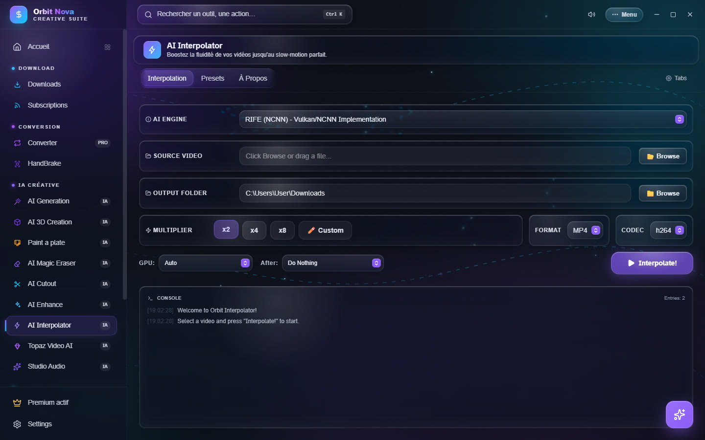
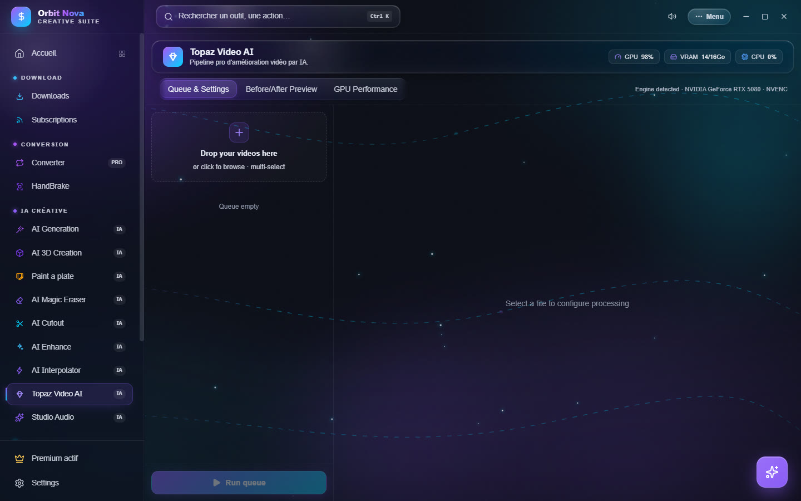
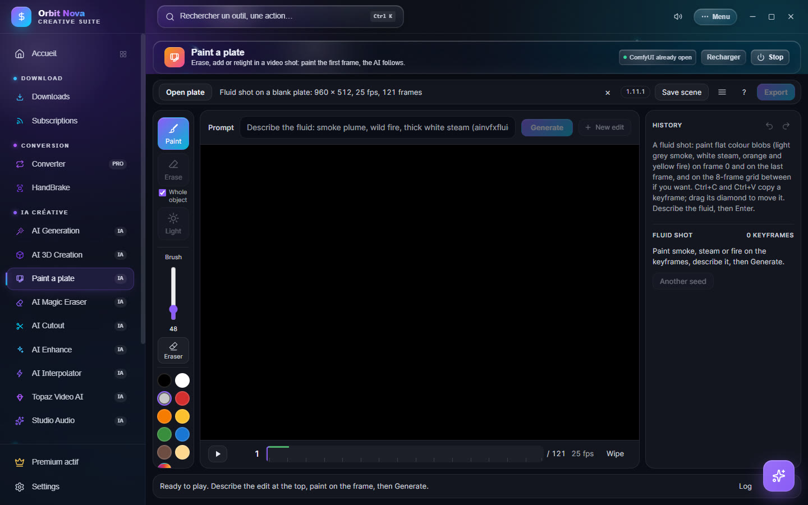
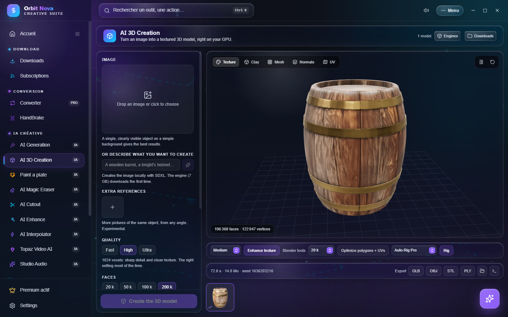

AI for video and 3D
AI Interpolator
Makes a video smoother by inventing the missing frames: 30 fps becomes 60, 120 or 240 fps, or a perfect slow motion. Part of Orbit Premium.


- Source video: Browse or drop a file.
- Output folder: where to save the result.
- Multiplier: ×2, ×4, ×8 or Custom; then the Format and the Codec.
- GPU: the card to use; After: what Orbit does at the end (nothing, open the folder…).
- Click Interpolate!; the Console follows each step (extraction, interpolation, rebuild).
The Presets tab offers ready settings: RIFE x2 - Anime-optimized, RIFE x2 lossless quality, RIFE x4 - Slow-mo x0.5, RIFE x4 - 120FPS, RIFE x2 → GIF, RIFE x8 - 240FPS. The RIFE engine works with every recent graphics card (Vulkan) and downloads the first time.
Topaz Video AI
Drives your own Topaz Video AI install from Orbit, with a queue and a before/after preview. Topaz Video AI must be installed and activated on your PC (Topaz licence). Part of Orbit Premium.


Orbit finds Topaz by itself (Engine detected); otherwise, Re-run detection. The settings follow Topaz's: Enhance & Upscale (AI model, scale, compression reduction, detail, sharpness, noise, dehalo, grain), frame interpolation (frames per second, slow motion), Stabilization (strength, shake, rolling shutter) and Export.
Paint a plate
Retouch a video shot by painting its first frame: erase an object, add one, change the light or add smoke, fire, steam. The AI applies the retouch to the whole shot.


Install
Paint a plate relies on ComfyUI and on the open-source Paint a plate pack (AInVFX). The tab guides the install:
- ComfyUI folder: pick an existing ComfyUI, or Install ComfyUI (official portable version, about 2 GB).
- Hugging Face token (
hf_…): some models need one. Create a token opens the Hugging Face page; then paste it in the field. It stays on your PC. - Install what is missing: the main models (about 61 GB), in the ComfyUI folder. The optional models add fluid shots (0.65 GB) and SDR to HDR (1.3 GB, licence to accept on Hugging Face).
- Start Paint a plate.
You need an NVIDIA card with 16 GB of video memory for comfortable use. The ComfyUI launch options can limit
the memory used (for example --reserve-vram 4 --cache-ram 16 on a 16 GB card). The Stop button shuts
ComfyUI down and frees the video memory.
Retouch a shot
- Open a shot: pick the video. Its format, frame rate and frame count show at the top.
- Pick the tool: Paint (add or replace), Erase (with Whole object to select the whole object in one click) or Light (relight).
- Paint on the frame, then write the Description of the retouch and click Generate.
- Compare with Compare, play the shot with the bottom bar, then Export: the video keeps the source format (codec, frame rate, timecode).
For a fluid shot (smoke, steam, fire), paint flat color areas on frame 0 and on the last frame, describe the fluid, then Generate. The history, on the right, keeps every try; Other seed runs a variant.
AI 3D Creation
Turns an image into a textured 3D model, right on your graphics card (TRELLIS.2 engine). Free tool.


Install
You need an NVIDIA card. The first time, click Install the engine: Orbit installs Python, PyTorch and the libraries, then the models (several GB). You can keep using Orbit during the install; if it is interrupted, it resumes where it stopped.
Create a model
- Drop an Image: one object, clearly visible, on a simple background gives the best results. No image? Describe the object ("a wooden barrel") and click Create the image (SDXL, locally).
- Extra references (experimental): other photos of the same object from other angles.
- Set the Quality (Fast, High, Ultra) and the number of Faces. With less than 20 GB of video memory, the resolution is lowered automatically when needed.
- Options: Generate the texture (off = geometry only, much faster), Remove background, Clean remesh, texture size, steps, seed.
- Click Create the 3D model. Count one to three minutes depending on the quality.
View, improve, export
The preview turns the model around, with several views: Texture, Clay, Mesh, Normals, UV. Then:
- Enhance texture: adds detail with FLUX.2 klein without changing the colors or the shape (15 GB to download the first time; intensity Light, Medium, Strong);
- Optimize polygons + UVs: a much lighter mesh that keeps the look;
- Rig: adds a skeleton with Rigify (automatic) or your own Auto-Rig Pro (Blender installed required), then Open the rig in Blender;
- Export: GLB, OBJ, STL, PLY, or Rigged FBX (skeleton, weights and textures for Unity or Unreal).
All your creations stay in the gallery at the bottom of the screen.